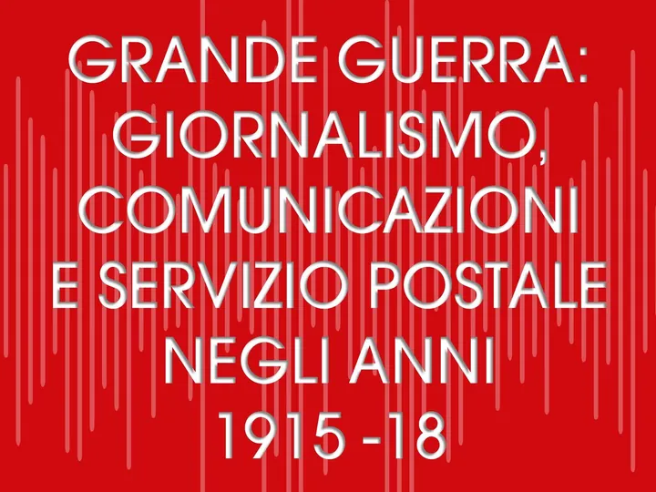

da gio 12 feb a dom 11 ott
Grande Guerra: Giornalismo, comunicazioni e servizio postale negli anni 1915-18
La mostra illustra alcuni aspetti della comunicazione militare e civile in Italia durante il primo conflitto mondiale . L’esposizione segue due binari: la comunicazione privata dei soldati, illustrata da lettere e cartoline dal fronte; la comunicazione ufficiale e strategica…
 Indicazioni
Indicazioni
- Costi e prenotazioni
- Costo non indicato · Prenotazione non indicata
- Programma
- Programma da verificare. Apri la fonte ufficiale per orari e possibili aggiornamenti.
- In caso di maltempo
- Nessuna indicazione specifica pubblicata.
- Note
- Acquisito automaticamente dalla fonte.
L’EVENTO
Descrizione completa
La mostra illustra alcuni aspetti della comunicazione militare e civile in Italia durante il primo conflitto mondiale . L’esposizione segue due binari: la comunicazione privata dei soldati, illustrata da lettere e cartoline dal fronte; la comunicazione ufficiale e strategica, per la quale sono esposti quotidiani dell'epoca e apparecchiature in dotazione all'esercito come i telefoni da campo. Le lettere dei soldati rivelano paure e pensieri sulla guerra, consegnandoci testimonianze dirette della loro esperienza , e sono traccia tangibile dell’enorme sforzo logistico che il Regio Esercito affrontò nel distribuire l’immensa mole di corrispondenza che negli anni del conflitto venne prodotta dai soldati e dalle loro famiglie. Le lettere e le cartoline esposte ci raccontano del sistema di censura che venne costituito: il timbro “Verificato per censura” è testimonianza del constante controllo esercitato sulle missive dei soldati. Sul cosiddetto fronte interno si combatté un’altra battaglia, quella della propaganda. In mostra si illustra come i quotidiani italiani narrarono il procedere delle operazioni, con toni spesso trionfalistici. Infine, le apparecchiature telefoniche esposte fanno luce su un altro aspetto della comunicazione tattica al fronte: la precarietà delle comunicazioni telefoniche, cruciali per la circolazione degli ordini, dipendenti dai cavi che fisicamente venivano srotolati e installati dai telefonisti, mentre intorno infuriava la battaglia.
IL PROGRAMMA
Programma e orari
Appuntamenti raccolti dalle fonti elencate. Dove manca un orario, non è ancora disponibile in questa scheda.
Programma pubblicato
- 2026-02-12 — 2026-06-30 · 10:00:00
- 2026-07-01 — 2026-08-31 · 10:00:00
- 2026-09-01 — 2026-10-11 · 10:00:00
INFORMAZIONI UTILI
Prima di partire
- Controllare la fonte prima di partire.
ORGANIZZAZIONE